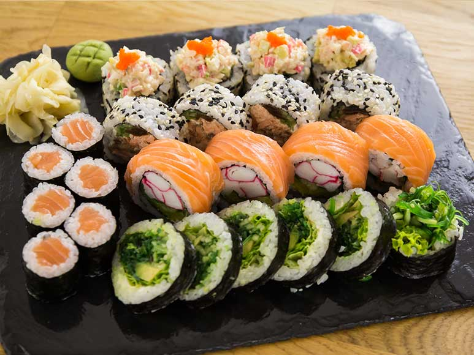
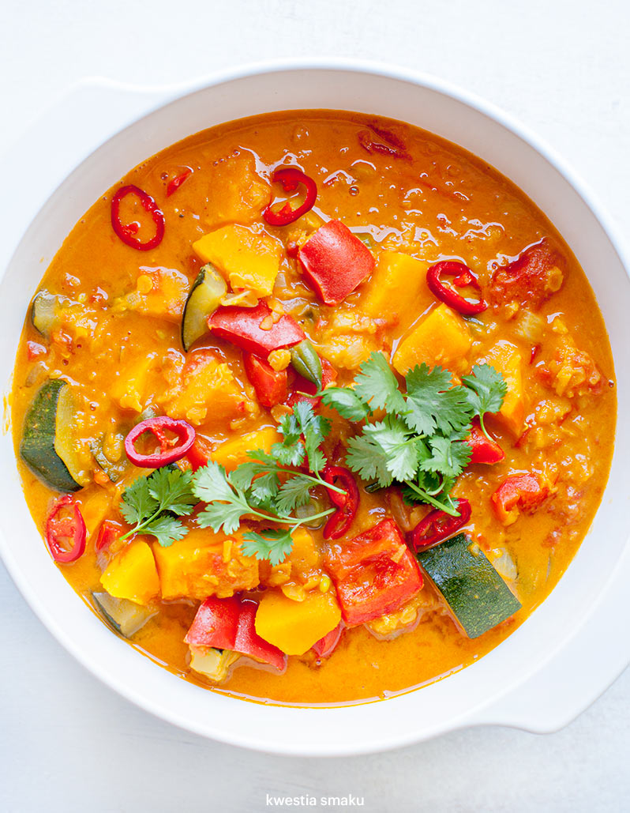
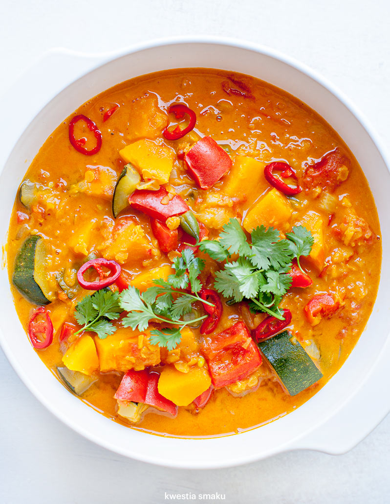

Kuchnia grecka
Kuchnia azjatycka
Kuchnia azjatycka jest jedną z najbogatszych i najbardziej różnorodnych na świecie. Obejmuje wiele tradycji kulinarnych z krajów takich jak Chiny, Japonia, Indie, Tajlandia i Wietnam. Każdy z tych regionów oferuje unikalne smaki, techniki gotowania i składniki.
 

Popularne dania
- Sushi - japońskie danie z ryżu i surowej ryby.
- Pad Thai - smażony makaron ryżowy z Tajlandii, często podawany z krewetkami lub tofu.
- Chińska zupa wonton - aromatyczna zupa z pierożkami nadziewanymi mięsem.
- Curry - pikantne danie popularne w Indiach, często z wykorzystaniem soczewicy, kurczaka lub warzyw.
Składniki
W kuchni azjatyckiej często używa się składników takich jak:
- Ryż
- Soja (sos sojowy, tofu)
- Imbir
- Czosnek
- Chili
- Świeże zioła (np. kolendra, bazylię tajską)
Techniki gotowania
W azjatyckiej kuchni popularne są różne techniki gotowania, takie jak:
- Smażenie na woku
- Gotowanie na parze
- Grillowanie
- Duszenie
Kuchnia tajska

Kuchnia ukrainska

Kuchnia Polska

Kuchnia chińska

Kuchnia Amerykańska

Kuchnia włoska